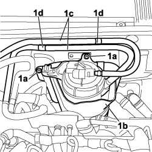
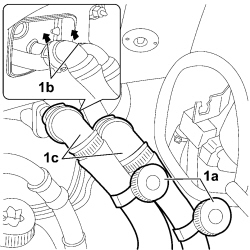
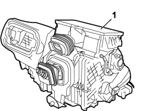

5040C12 AIR CONDITIONING CASING - R.R. WITH DASHBOARD REMOVED
- Path
- Procedures > 50 AUXILIARY UNITS > 5040 AIR CONDITIONING CASING AND COMPONENTS > 5040C AIR CONDITIONING CASING AND COMPONENTS > 5040C12 AIR CONDITIONING CASING - R.R. WITH DASHBOARD REMOVED
- Kind
- repair procedure (removal / refitting; the operation number is the code)
- Applies to
- all engines; all production periods
- Interactive page
- https://sloeber94.github.io/elrnDB-fCrm/en/#/194000615
Applies to: all engines; all production periods
 Removing
Removing
 Refitting
Refitting- Working inside the vehicle, carry out the following operations:
Op. 7040A98 INSTRUMENT PANEL TRIM SUPPORTING CROSSMEMBER - R.R. WITH DASHBOARD REMOVED
- Working outside the vehicle, carry out the following operations:
Op. 0010T84 COOLANT FOR AIR CONDITIONING SYSTEM - DEHYDRATE AND REPRESSURIZE
Op. 7210E22 R.R. WINDSCREEN BASE TRIM
1. Undo the nut (1a) fixing the coupling to the expansion valve and release the evaporator tandem supply and return pipe (1b).

Applies to: all engines; all production periods
1. Working from inside the windscreen base compartment, undo the bolts (1a) fixing the fuel filter (1b), release the pipes (1c) from the retainers (1d) and move the fuel filter outside of the work area.

Applies to: all engines; all production periods
1. Tighten the pipe restricter terminals (1a), release the rapid connectors (1b) and release the connectors for the pipes (1c) from the air conditioning casing.

Applies to: all engines; all production periods
1. Working from inside the vehicle, remove the air conditioning casing.

Applies to: all engines; all production periods
Refitting
Removing- Place the air conditioning casing in position, taking care to fit the gaskets and the condensation drainage pipe correctly.
- Working from outside the vehicle, fit the connectors for the pipes in the air conditioning casing and secure them using the special rapid connectors.
- Undo the pipe restricter terminals.
- Place the fuel filter in its housing, tighten the fixing bolts and secure the pipes to the retainers.
- Fit the tandem supply and return pipe to the evaporator and tighten the nut fixing the coupling to the expansion valve.
Component | Fastening | dia | Value (daNm) | Validity |
|---|---|---|---|---|
EVAPORATOR/CONDENSER PIPE ON EVAPORATOR | Nut | M8 | 1,4 ÷ 1,6 |
Op. 7210E22 R.R. WINDSCREEN BASE TRIM
Op. 0010T84 COOLANT FOR AIR CONDITIONING SYSTEM - DEHYDRATE AND REPRESSURIZE
Op. 7040A98 INSTRUMENT PANEL TRIM SUPPORTING CROSSMEMBER - R.R. WITH DASHBOARD REMOVED
Topics linked from this page (5)
- 0010T84 COOLANT FOR AIR CONDITIONING SYSTEM - DEHYDRATE AND REPRESSURIZE
- 5040 AIR CONDITIONING CASING AND COMPONENTS
- 7040A90 REINFORCEMENT BRACKET ONE LEFT OR RIGHT BETWEEN FACIA SUPPORT BEAM AND BODY R R WITH FACIA REMOVED
- 7040A98 INSTRUMENT PANEL TRIM SUPPORTING CROSSMEMBER - R.R. WITH DASHBOARD REMOVED
- 7210E22 R.R. WINDSCREEN BASE TRIM